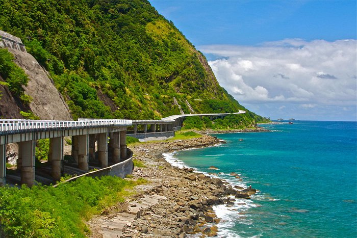

Visit Patapat Viaduct Pagudpud
The Patapat Viaduct, also known as Patapat Bridge, is a viaduct at the municipality of Pagudpud, Ilocos Norte, a coastal resort town on the northernmost tip of Luzon Island in the Philippines.The bridge is elevated 31 meters (102 ft) over sea level. It is a concrete coastal bridge 1.3 kilometers (0.81 mi) long, 9.42 meters (30.9 ft) wide,[1] and connects the Maharlika Highway from Ilocos Region to Cagayan Valley.
Death Pool Pangasinan
The Death Pool is a natural pool located on the far right side of the beach. Getting there is not for the faint-hearted. A couple of minutes of walking towards the pool and you'll need to pass through rocky paths leading to even bigger rock formations.